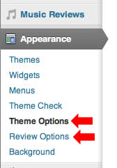
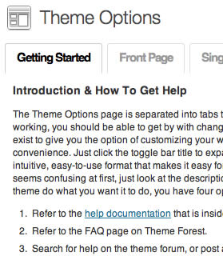
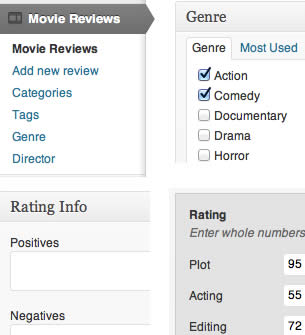
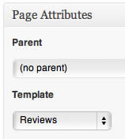
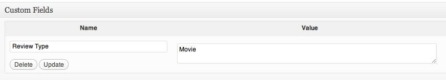
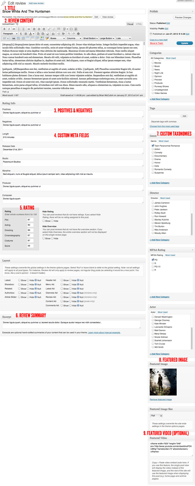
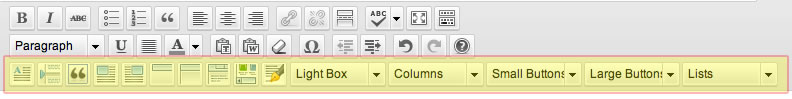
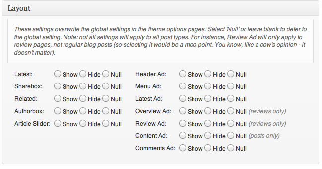

“Made” Documentation by “Industrial Themes” v1.0
Created: 6/1/2012
By: Industrial Themes
Email: support@industrialthemes.com
Thank you for purchasing our theme. If you have any questions that are beyond the scope of this help file, please use our support center. Also, you should read the FAQ which contains answers to the most common issues and questions that Made users have had in the past.
Table of Contents
- Getting Started
- HTML Structure
- CSS Files and Structure
- JavaScript
- PNG Files
- Sources and Credits
- PHP Code Explanation
- Detailed User Guide
A) Getting Started - top
Summary
Made is best used for magazine-style blogs, but has been built with all types of websites in mind. There are tons of options available to you in the theme options pages, so you can really customize it to do exactly what you want it to do. However, even if you don't adjust any of the settings and just want to get your website up quickly, Made has been built to present your website in a professional manner by default. Following are the essentials for running Made, and then if you want to know about anything in more detail, you can find a wealth of information further down this page.
Quick Start Guide
IMPORTANT INFO: please visit the FAQ for answers to the most common questions regarding this theme, as well as many helpful tips and up-to-date information on how to use it.
 Installation - To get started, open the Made-Theme folder that you downloaded and find the folder named made. Upload this folder (unzippped) into your wp-content/themes/ folder using FTP (FileZilla is a free FTP client you can use) and then activate it in your Wordpress admin panel under "Appearance" >> "Themes". Once Made is activated, you'll notice the Theme Options page under the "Appearance" menu, which is where all of the theme settings are. You'll also notice the Review Options page under the same menu which lets you create unlimited review types. Please note: the WordPress theme auto-installer tool has trouble with larger themes such as Made, so it is recommended to use FTP as mentioned above to upload the theme to your website.
 Theme Options - The Theme Options page is separated into several tabs. The first tab contains all the information you need to use the options tabs. In addition, every single option is named and described in an intuitive way so that you always know what a setting will do.
Your Front Page - There are several areas that posts can be displayed on your front page:
- Featured: Designate these posts using the Theme Options >> Front Page >> Featured Slider options.
- Spotlight: Designate these posts using the Theme Options >> Front Page >> Spotlight Slider options.
- Tabbed Posts: Designate these posts using the Theme Options >> Front Page >> Tabbed Posts options.
- Trending: Designate these posts using the Theme Options >> Front Page >> Trending Slider options.
- Category Panels: Designate these posts using the Theme Options >> Front Page >> Category Panels options.
- Latest Posts: Designate these posts using the Theme Options >> Front Page >> Latest Posts options.
- Top Menu: The top menu bar which also houses the search box. This is a good place to put your pages.
- Main Menu: The full-width menu that sits directly above the main content wrapper. This is a good place to put your categories and review types.
- Sub Menu: The full-width menu that sits directly below the Main Menu. This is a good place to put other miscellaneous pages that don't belong in the Top Menu or the Main Menu. Note: this menu will be automatically replaced with primary taxonomy items when viewing review mini-sites.
- Footer Menu: The full-width menu that sits directly above the footer. This is a good place to put your main pages for ease of access when users are viewing your footer. Note: you can hide this menu in Theme Options >> Miscellaneous >> More Options >> Hide Footer Menu.
 Setting Up Review Types - Before you can write any reviews you have to specify what your review types are. Go to Appearance >> Review Options and follow the instructions on that page to create your review types. You can create as many review types as you want, or you can use just one if you prefer (or none - in which case, skip this section). For each review type, you can specify all sorts of things like color, icon, layouts, and custom taxonomies (review-specific categories). Important Step: after you create your review types, and any time in the future after you add or modify the names of your review types, go to Settings >> Permalinks and click Save. Otherwise, you might see 404 errors when you try to view your reviews.
Setting Up Review Types - Before you can write any reviews you have to specify what your review types are. Go to Appearance >> Review Options and follow the instructions on that page to create your review types. You can create as many review types as you want, or you can use just one if you prefer (or none - in which case, skip this section). For each review type, you can specify all sorts of things like color, icon, layouts, and custom taxonomies (review-specific categories). Important Step: after you create your review types, and any time in the future after you add or modify the names of your review types, go to Settings >> Permalinks and click Save. Otherwise, you might see 404 errors when you try to view your reviews.
 Writing Reviews - Once you have set up your review types you will notice the review type appear in the admin menu. Click Add New to write a new review, and then give it a title, body content, featured image, tag, and categories just like a regular post. The difference is you will also need to specify custom taxonomies and fill out the Review Info fields (these are specified when you first set up the review type).

Creating The Review "Mini-site" - Once you have setup your review types and written at least one review per review type, you are now able to create your review "mini-site". This is basically a website within your website catered just to a particular review type. To do this, create a new WordPress page and select Reviews as the page template. Do not title this page identically to the name of the review type or it could cause pagination problems in certain places (for instance, if the name of your review type is "Movie", do not give this page a title of "Movie", use something else instead, like "Movies"). Then Add a new custom field named "Review Type" with a value that matches the name of your review type. For this example it is "Movie". You should always match capitalization. All the rest of the settings for the review mini-site are specified when you first set up the review type. If you do not see the Custom Fields panel, expand Screen Options (upper-right of page) and make sure Custom Fields is ticked.

AJAX Thumbnail Rebuild - If you are installing this theme on a brand new blank WordPress installation, you can skip this section. If you already have articles with featured images in your WordPress site before you install Made, you will need to resize your featured images to fit the dimensions of all the thumbnail areas used in Made. To easily and quickly do this, install the AJAX Thumbnail Rebuild plugin, and then go to Tools >> Rebuild Thumbnails and run it once. After the first time you run it, you will not have to run it again since any images uploaded after you have installed Made will automatically be sized correctly. It only applies to images uploaded to your media library before you install Made. Note: if you have a lot of images it might take a while to complete - just let it work its magic and if for some reason it doesn't finish the first time feel free to run it again as many times as you want - it won't hurt anything or create any duplicate images.
Using BuddyPress
Made requires that you install the BuddyPress Template Pack plugin if you are going to use BuddyPress. If you don't install this plugin, you will lose a lot of the styling and fancy AJAX functionality. This plugin is made by the creators of BuddyPress and is meant for enabling themes to work with BuddyPress, so it's very reliable, trustworthy, and recommended, and doesn't add any strain to your server load at all. Note: this plugin is obviously not required if you are not going to install BuddyPress.
Made is fully comptible with BuddyPress and bbPress. If you already have these environments setup on your website, then transitioning to Made should be seamless. If you don't know how to use BuddyPress or bbPress and you need information about how it works, please refer to the BuddyPress website which contains a wealth of information about using it, setting it up, troubleshooting it, and just generally what it is.
When you are initially setting up a BuddyPress installation you will be able to select Made in the list of BuddyPress-compatible themes. If BuddyPress is already installed, you can go to Appearance >> Themes and activate Made and it should take care of the rest.
B) HTML Structure - top
Made is a 960px fixed-width theme with semantically written, indented and intuitively spaced HTML. You will find in-line commenting all throughout the HTML so that you can always figure out what section of the layout you are in. The backbone of every page is as follows:
Compatibility
Made is built with valid XHTML. The only XHTML errors are on the single posts page and are due to the social share buttons which have supplied their own code and is not due to the way Made is built or caused by any code used in Made. It is certified compatible with Google Chrome, Mozilla Firefox, Safari, Opera, and Internet Explorer 8+. Made was built using Wordpress version 3.4, and has been tested and verified with versions 3.3+ at the time of this writing. Check the update log to see if Made has been updated to work with a future version of WordPress. Here are a few very minor style differences that happen in IE:
- IE8: the share box is fixed to the left side of the browser viewport instead of the content container because of an IE bug
- IE8 and 9: the button darken jquery style doesn't work on buttons
<body>
<div id="top-menu-wrapper">
...page menu, social links, search box...
</div>
<div id="page-wrapper">
<div id="logo-bar">
...logo and header ad...
</div>
<div id="cat-menu">
...main menu, sub menu, taxonomy menu...
</div>
<div id="dontmiss-bar">
...don't miss slider and email signup/widget...
</div>
<div id="main-wrapper">
<div id="latest">
...latest slider...
</div>
<div class="main-content-left"> ...or... <div class="main-content"> (for full-width pages)
...all page content, including featured slider, post loop, tabs, category panels, trending, etc....
</div>
<div class="sidebar"> (only applies to non full-width pages)
...all sidebar widget content...
</div>
</div>
<div id="footer-wrapper">
...footer menu, footer widgets, copyright bar...
</div>
</div>
</body>
In order to create this HTML structure, each page includes the header.php and footer.php files. You will notice there is no "sidebar.php" file in Made. That is because there are lots unique widget areas, and rather than creating lots of separate sidebar files with redundant code - one for each widget area - the sidebars are included directly in each of the pages that they are assigned to.
There are three responsive sizes for Made: Full Size, Tablet Size, and Mobile Phone Size. You can switch between the three versions by resizing your browser, and once you get below the width threshold of the current size, the site will snap to the next size down. There are a few areas in the HTML that are included for responsive reasons. These areas are always commented in the code, so this is a general overview of such areas. You'll notice throughout the HTML that there are clearer elements that only apply to full-size versions of the theme are are hidden for responsive versions. For example:
<br class="clearer hide-responsive-small" />
Another major difference in responsive is the main menus. For the desktop and tablet sizes the menus are full-featured. For mobile phone sizes (the smallest responsive size) the standard menus are replaced with jQuery-enhanced drop down select menus. For example in the header.php file starting on line 494 is one such example. These menus are dynamically built out using PHP, but the generated HTML tags visible in the page source when viewing your site exist on the page but are hidden for all sizes except mobile phones.
The last major difference for responsive versions is that some jQuery slider elements are either disabled (i.e. static, non-sliding) or completely hidden, depending on the size of the browser. For tablets, the latest slider and trending slider are both static, and the front page tabs are hidden. For mobile phones, the latest slider, trending slider, spotlight slider, and front page tabs are hidden.
Important Note: When resizing your browser on a large desktop/laptop device into the various responsive sizes, you'll notice some of the sliders stop working. This is normal functionality and by design. In order to see exactly what the site will look like in each of the responsive sizes, resize your browser to the size you want and then refresh the page, and then the sliders will begin working in the newly-sized viewport.
To make changes to any of the HTML or CSS in the theme, use Chrome or Firefox+Firebug and right-click any element in the theme and choose "Inspect Element". This will bring up a console that shows you the HTML that applies to that area, and it will also display exactly which lines in the CSS files apply to that HTML element. Then you can open the necessary files in a text/code editor on your computer and make the changes. Alternatively you can edit the files directly using the built-in WordPress theme editor screen.
Please note that any changes you make the theme will be overwritten if you update the theme and if the specific files that were modified in the update are the same as the files you have modified. Since CSS is the most common thing changed in WordPress themes, Made comes with a file called custom.css. This file is loaded after all of the other stylesheets and thus will take precedence. Any time you want to make a chance to a CSS file, instead of changing the file directly, add the styleblock that you are editing to the custom.css file and then make the changes there. The custom.css file will never be modified in an update and thus will never be overwritten.
C) CSS Files and Structure - top
There is a blank custom.css stylesheet included in Made that is called after all other stylesheets. The purpose for this stylesheet is so you can do any edits you want to the style in this file instead of editing the default stylesheets so that when you update Made your CSS changes will not get overwritten. You can edit this file from within the theme editor in WordPress.
Almost all theme style is located in style.css, which is commented, well-organized, and semantically-written. There are only two exceptions to this: 1) IE specific css fixes (located in the css/ folder) and 2) jQuery plugin default styles (located in the js/js.css file). Here is the layout of the style.css file:
/************************************************* css reset and general setup *************************************************/The CSS reset which clears out all browser pre-defined styles for elements
/************************************************* ratings *************************************************/How to display the ratings (stars, numbers, letter grades, and percentages)
/************************************************* section headers *************************************************/The headers that separate content sections
/************************************************* ribbon shadows *************************************************/The small ribbon shadows that appear underneath all of the various section headers
/************************************************* top bar *************************************************/The light grey bar at the very top of the page housing the top menu and search box
/************************************************* header area *************************************************/The logo, main menu, and header ad section directly below the top bar
The rest of the file continues in this fashion moving further down a theme page in top to bottom order. After the footer code there is additional style explained below:
/************************************************* flickr plugin *************************************************/Some default styles that apply to the Flickr jQuery plugin
/************************************************* shortcodes *************************************************/The styles that apply to all of the shortcodes
/************************************************* dark skin *************************************************/Overwrites the default elements with dark-themed styles for the entire site
/************************************************* demo purposes only *************************************************/Styles that apply to the demo panel. This is only used for demo purposes to showcase the theme on ThemeForest and does not apply to your installation of the theme.
@media screen and (-webkit-min-device-pixel-ratio:0) {
Styles that apply only to Google Chrome
@media not all and (-webkit-min-device-pixel-ratio:0) {
Styles that apply only to Opera
@media print {
Styles that apply only to print media
/************************************************* responsive styles *************************************************/Styles that apply to tables and smart phones
/************************************************* fonts *************************************************/Custom fonts using the @font-face attribute. These must not be included in a media query so they work in IE8.
D) JavaScript - top
Made loads Wordpress's built-in jQuery library and additionally imports 3 javascript files:
- plugins.js: All jQuery plugins used by the theme, including Nivo Slider, jCarouselLite etc. This file is minified, so in order to modify this file use the unminified version plugins-expanded.js to make changes and then minify it into plugins.js.
- custom.js: All custom javascript functions used by the theme. This file is also minified and is accompanied with the unminified version custom-expanded.js.
- customcodes.js: TinyMCE custom buttons (used only by the admin panel, not on the front-end)
If the sharebox is enabled and you're viewing a single page, there are also a few conditional external javascript calls at the very bottom, but these are only loaded on specific pages. Following is a list of jQuery plugins used in the plugins.js file:
- jQuery EasIng v1.1.2 - general easing effects - http://gsgd.co.uk/sandbox/jquery.easIng.php
- jQuery UI 1.8.18 - customized jQuery UI components - http://jqueryui.com/
- jQuery jCarouselLite plugin - sliders - http://www.gmarwaha.com/jquery/jcarousellite/
- jQuery Cycle Plugin (with Transition Definitions) - http://jquery.malsup.com/license.html
- Nivo Slider v3.0.1 - used for the main featured sliders - http://nivo.dev7studios.com
- Superfish v1.4.8 - dynamic menu effects - http://users.tpg.com.au/j_birch/plugins/superfish/
- Twitter - latest Tweets plugin - https://github.com/seaofclouds/tweet
- Flickr - Flickr photos plugin - http://www.newmediacampaigns.com/page/jquery-flickr-plugin
- ColorBox v1.3.19 - lightbox plugin - http://www.jacklmoore.com/colorbox
- Color picker - color palette picker - http://www.eyecon.ro/colorpicker/
- UItoTop - back to top arrow - http://www.mattvarone.com/web-design/uitotop-jquery-plugin/
- Mousewheel - utility use - http://brandonaaron.net/code/mousewheel/docs
- SmoothDivScroll - Don't Miss slider - http://www.smoothdivscroll.com/
- SelectBox - responsive menus - https://github.com/claviska/jquery-selectBox
Note: The settings for most of the jQuery plugins are located in the custom.js file, but some of them are located in the footer.php file since they require php variables from the theme options page. An explanation of what each setting does is commented in-line. You should only ever need to edit the javascript in the footer.php file or the js/custom.js file (use the custom-expanded.js file and then minify it into the custom.js file). For instance, if you want to change the transition method used in the "Featured" slider, you would adjust this code in the footer.php file:
//featured slider
jQuery('#featured').nivoSlider({
effect: 'random',
...
});
You could change it to something like this instead:
//featured slider
jQuery('#featured').nivoSlider({
effect: 'fold',
...
});
E) PNG and PSD Files - top
Every image used in the Made theme has a corresponding layered PNG file located in the main Made-Theme folder that you downloaded from ThemeForest, inside of the PNG folder. Look in the source of the code to find the image that you want to edit, and find the corresponding image file located in the PNG folder. Open the file in an image editor that is capable of editing PNG files, such as Adobe Fireworks, edit the file, and export the file to the images folder inside of the made theme folder (located inside the main Made-Theme folder that you downloaded from ThemeForest).
Additionally, to find the image you wish to edit using a more visual approach, open the PSD folder inside the main Made-Theme folder that you downloaded from ThemeForest and open the file that corresponds with the page that contains the image you wish to edit. Then, export the image as a PNG file and place it in the images folder inside of the made theme folder (located inside the main Made-Theme folder that you downloaded from ThemeForest).
F) Sources and Credits - top
Please see the Credits page in the demo for a full list of all assets used by the theme as well as where they can be obtained and copyright/licensing information for each asset.
G) PHP Code Explanation - top
The main functions.php file in the root theme folder calls several PHP files (commented in-line) located inside the functions/ folder, which are as follows:
- oswc-post-types.php - all the classes and functions used to setup review types.
- theme-options.php - calls the variables set in the theme options admin page.
- review-options.php - calls the variables set in the review options admin page.
- widgets.php - creates the custom sidebars and sets up all the custom widgets.
- custom.php - contains the functions which are widely used throughout the theme, such as custom menus and other functions which are standard to Wordpress theme initialization, featured image sizing, tinyMCE button add-ons for the post edit screen, post pagination, comment styling, additional profile fields, and functions that are used by the page templates like setting up the reviews, get category ID, etc.
- shortcodes.php - creates all of the shortcodes that are used in the post and page edit screens.
- post-types.php - creates the review types specified in the oswc-post-types.php file.
- meta-boxes.php - displays the custom field descriptions below the post content when editing posts, pages, and reviews.
- update-notifier.php - functions to alert users of theme updates via the admin dashboard.
There are a myriad of functions in this theme, espcially dealing with creating unlimited custom review types. You can see what each function does in the oswc-post-types.php file by reading the inline comments. The majority of the rest of the functions are in the custom.php file, which is also heavily commented for ease of modification. There are no third-party plugins required to run this theme since all the functionality is already included via these php files.
H) Detailed User Guide - top
Now that you know about the specs of the theme, let's dive deeper into how it all works. If you have had some experience using Wordpress you were most likely able to get up and running using the Quick Start guide at the beginning of this document. If you need a little more instruction on how to use the theme, or if the Quick Start guide left you with further questions, this is where you'll find the answers. The Detailed User Guide also explains more features that weren't mentioned above, such as an explanation of the widgets, custom field values, and shortcodes.
Information regarding all sliders: all sliders let you specify a Type Name (the name of the tag, category, or review type to use, depending on each slider's settings). This can be the name of the tag/category/review type and does not have to be the slug (this is only mentioned since IndustrialTheme's previous themes have required slugs and is worth distinguishing this difference).
Don't Miss Slider
The don't miss slider is directly below the main menu and continuously scrolls posts from right to left in a marquee fashion. It is capable of being displayed on every page of your site, but can be hidden on a per-section or even per-page/per-post basis. It always displays the same posts no matter what section of the site you're viewing (i.e. it cannot display review-specific posts when you are in a review mini-site). It is intended to showcase your most important posts like a news feed at the top of all pages.
Administer this slider in Theme Options >> Miscellaneous >> Don't Miss Bar. You can display posts from a specific tag, category, or review type, or you can simply have it display your [x] number of latest posts. Please note you must have at least 5 posts for it to loop. In some rare cases (like if your post titles are very short) it will not loop continuously and will instead stop after it gets to the end. If this is the case, add select 6 or more posts until it begins looping.
This slider pauses on mousehover and does not include any navigation arrows, it simply continues to move from right to left in an infinite loop.
Latest Slider
The latest slider is directly below the don't miss bar and does not rotate automatically (users can navigate left or right using the arrows). It is capable of being displayed on every page of your site, but can be hidden on a per-section or even per-page/per-post basis. Unlike the don't miss slider the latest slider is capable of displaying review-specific posts for each review mini-site. It is intended, like the don't miss slider, to showcase important posts, but it has the advantage of being scaled down to each review type level rather than a site-wide scope (or it can be site-wide like the don't miss slider).
Administer this slider in Theme Options >> Miscellaneous >> Latest Slider. You can display posts from a specific tag, category, or review type, or you can simply have it display your [x] number of latest posts. Please note you must have at least 5 posts for it to loop. If you have less than 3 posts in your latest slider it will not display correctly.
Keep in mind that, depending on how you setup the latest slider in your different review types, the latest slider will display different articles on your front page and regular post pages than it will display on specific review type pages. This is by design and shows the versatility of the latest slider.
Featured Slider
The featured slider is under the latest slider, and leverages the jQuery Nivo slider plugin. The slider that displays on the home page is independant of the slider that appears on the front page of your various review mini-sites. All of the sliders require that you tag posts "featured", but the homepage slider looks at all posts regardless of review type, whereas the sliders on the front pages of your various review mini-sites only use posts that are in their respective review types.
The featured slider can rotate through as many posts as you want, and it is responsive and works for all browser sizes. There are two fixed width sizes of the featured slider - small and large - and you can use separate sizes for each review type. If you want to change either of these sizes you would need to edit code in the inc/featured.php and style.css files.
If you specify a full-width layout for any page that contains the featured slider (and if you are using the small size featured slider instead of the large size), then the sidebar will only float to the right of the slider as opposed to the slider and the content. That means if the height of your sidebar is taller than the featured slider, it will push your post content down the page. To get around this, the theme comes with featured-specific sidebars that are unique to pages that contain featured sliders. For instance, if you create a review type named Movie, a widget panel will automatically be created called Movie Featured Sidebar, which is the sidebar that will be used on the front page of the review mini-site.
Spotlight Slider
The spotlight slider is under the featured slider and only displays on your homepage. It is a jQuery rotating panel that can display as many articles as you want. Using the Theme Options >> Front Page control panel, enter the names of the tags, categories, or the review type that you want to use to mark posts as Spotlight. This setting does not apply if you have selected "Latest" for Type Of Posts. The spotlight slider expands to full-width if you're not using a sidebar on your front page, and it is also responsive (but is hidden for mobile phones).
Trending
The trending slider is under the spotlight slider on your homepage, and it is above the footer on the rest of your pages. Its user interface functionality is the same as the Latest slider as it has left and right arrows to allow for user navigation, otherwise it is similar in functionality to the don't miss slider as it displays the same posts on all pages regardless of which review type you're using. Using the various tabs in the Theme Options you can specify the number of articles to rotate through, tell which pages to display it on, and enter the names of the tags, categories, or review type that you want to use to mark posts as Trending posts. You can also hide this slider on a per-post and per-page basis using the Layout panel when editing a post or page. The trending slider expands to full-width if you're not using a sidebar on the page, and it is also responsive (but is static for tablets and hidden for mobile phones).
Category Panels
The category panels are under the trending slider and only display on your homepage. Each panel displays the latest x number of posts from a certain category (or review type or tag), with a larger first post and smaller subsequent posts. You can specify as many panels as you want. Using the Theme Options >> Front Page control panel, enter the names of the tags, categories, or review types that you want to use to mark posts as Category Panel posts. Separate tags, categories, or review types by a comma, and one Category Panel will be created for each term. You cannot mix and match tags, categories, and review types. You can specify as many terms as you want and that number of category panels will be created (they can stack on top of each other).
Related Articles
After each article and review there is a tabbed panel of related articles. This displays slightly different articles based on the post type, which is described below:
Reviews: First it looks for other posts in the same level taxonomies. If it finds at least one post in at least one of the assigned taxonomies, it displays that post in the related panel. If it doesn't find any, it scraps all of the current taxonomies and then goes up to the top level parent taxonomy for each of the assigned taxonomies and attempts to display posts from each of those taxonomies. If it finds at least one post in at least one of the parent taxonomies it displays that post in the related panel. If it doesn't dine any, it scraps all taxonomies altogether and looks at the assigned categories and looks for other posts in each of the assigned categories. The important thing to note here is that it cannot mix and match, meaning it can't display same-level taxonomies and parent level taxonomies and the category in separate tabs of the same related panel. The related panel is all or nothing, so it can only display one of the three possible lookups and cannot mix and match.
Regular posts: First it looks for other posts with the same tags (no parents involved here). If it finds at least one post with at least one of the assigned tags, it displays that post in the related panel. If it doesn't find any, it scraps all of the current tags and then looks based on category. So, it finds posts in all of the assigned post's categories and displays them. Again, as with reviews, you cannot mix and match - it is either all tags or all categories.
If it absolutely finds nothing, it will just display a blank related panel so that the user can see that there's supposed to be SOMETHING there, since it's not likely that a post/review will have no related taxonomies/categories/tags at all, and even if that does happen by some chance, the user can see a blank related panel and be prompted to figure out why they have nothing related. This is better than having the author box with nothing to the right of it but blank space.
Custom Menus
Menus - There are four custom menus that are included in the header.php file. The position and name of each of the menus is as follows:
- Top Menu: The top menu bar which also houses the search box. This is a good place to put your pages.
- Main Menu: The full-width menu that sits directly above the main content wrapper. This is a good place to put your categories and review types.
- Sub Menu: The full-width menu that sits directly below the Main Menu. This is a good place to put other miscellaneous pages that don't belong in the Top Menu or the Main Menu. Note: this menu will be automatically replaced with primary taxonomy items when viewing review mini-sites.
- Footer Menu: The full-width menu that sits directly above the footer. This is a good place to put your main pages for ease of access when users are viewing your footer. Note: you can hide this menu in Theme Options >> Miscellaneous >> More Options >> Hide Footer Menu.
By default these menus will display nothing, categories, pages, and pages, respectively. That means if you don't go in and setup the custom menus, you will have a blank top menu, a category menu, and two page menus - one at the top of the page and one at the bottom. Go to "Appearance" >> "Menus" and click the plus to add a new menu. We'll use the Main Menu as our example. Name the new menu whatever you want, but it is recommended to follow the same naming convention already in place to help you remember which is which, so we suggest naming it something like "Custom Main Menu". Add any pages, posts, categories, or custom links from the panels on the left that you want to display in this menu, and then save it.
Next, find the Main Menu drop down box in the Theme Locations panel on the left and select the name of your new menu (e.g. "Custom Main Menu"), then click Save. The main menu will now display the items that you specifically added to it. Repeat this same process for the other menus.
Important note: when you add a review type mini-site to any of your menus, you must specify the review type slug in the Title attribute of the menu item that you're adding. If you do not do this, then when viewing taxonomies or individual review pages within a review type the main review type menu item will not be highlighted with the appropriate review type color.
Writing A Review
The following screenshot shows the necessary input fields to create a full review. You can also add categories and tags just like you would with normal posts. The meta fields, rating criteria, and custom taxonomies are all based on the options you specify for the review type in the Review Options panel. Notice that the Excerpt is used as the content for the Bottom Line at the bottom of the overview panel.
Widgets & Sidebars
The theme comes standard with 11 custom widgets and 16 widget panels which allow you to place different widgets on different pages. Additionally, each review type you create adds two more widget panels, giving you a potentially unlimited number of widget panels. Once you install the theme, the widgets and sidebars will automatically become available on the Appearance >> Widgets page. The custom widgets are all named beginning with "Extended:". All of the widgets and sidebars have thorough descriptions that explain what they each do, but we will additionally list them in this section.
Widgets
- Extended: Ad Block - Insert your adsense or HTML code for four 125px-wide ads that will display in a 2 x 2 panel (if this widget is put into a footer panel, the maximum width of the ads is 90px instead of 125px)
- Extended: Email Subscribe - Displays a form for users to subscribe to your Feedburner feed via email. Here is a good article explaining how to find your feed name.
- Extended: Flickr Feed - Displays the thumbnails from your Flickr account feed.
- Extended: Latest Reviews - Displays a single review type by most recent to least recent. Add multiple widgets for each review type
- Extended: Latest Review Tabs - Displays recent reviews in a jQuery tabbed format with either large or small thumbnails
- Extended: Latest Review Tabs Compact - Displays recent reviews in a jQuery tabbed format without thumbnails in a more compact fashion so you can fit more on the page at once.
- Extended: Latest Tweets - Displays your latest Tweets
- Extended: Latest Page & Archive Tabs - Displays pages, categories, and archives in a jQuery tabbed format
- Extended: Post Tabs - Displays posts, comments, and tags in a jQuery tabbed format
- Extended: Review Category Tabs - Displays review categories in a jQuery tabbed format
- Extended: Unwrapped Text - Displays arbritrary text of HTML just like the standard Text widget, but this one does not include the header bar and wrapper style - just a blank canvas for content
Sidebars
- Frontpage Main - These widgets appear in the main content area of the front page
- Frontpage Sidebar - These widgets appear in the sidebar of only the front page (if you set this option in the theme options)
- Top Widget - These widgets replace the three social links to the left of the search bar in the top menu area.
- Signup Widget - These widgets replace the Get Our Newsletter signup form in the Dont Miss bar.
- Demo Panel - These widgets appear in the slide-out "Demo" panel and replace all the demo content. There is no styling here, just an area for you to put in your custom HTML via a text widget.
- Single Post Sidebar - These widgets appear in the sidebar of all regular single posts (depending on settings in the theme options)
- Default Sidebar - These widgets appear in the sidebar of all pages (depending on settings in the theme options)
- Page Sidebar - These widgets appear in the sidebar of all regular pages (depending on settings in the theme options)
- Archive Sidebar - These widgets appear in the sidebar of all category/archive/tag listing pages (but not review listings)
- Search Sidebar - These widgets appear in the sidebar of all search listing pages
- Author Sidebar - These widgets appear in the sidebar of the author listing template page
- Footer Panel 1 - These widgets appear in the first footer panel
- Footer Panel 2 - These widgets appear in the second footer panel
- Footer Panel 3 - These widgets appear in the third footer panel
- Footer Panel 4 - These widgets appear in the fourth footer panel
- Footer Credits - The small credit text area at the very bottom right-hand side of the footer
Shortcodes

The theme comes with 80 shortcodes that do anything from create a styled button to group content into jQuery tabs to show your pre-defined sign-off text at the end of each post. In addition to offering these shortcodes, it's easy to add them to post content because there is a visual button in the post editor for each shortcode. That way, you don't have to remember what the shortcodes actually are. However, we will list them here so you have a reference, especially since you won't always necessarily use the visual editor toolbar to insert shortcodes. Remeber, you can add shortcodes whether you are viewing the Visual or the HTML editor. Here is a table of shortcodes by name, code, and description:
| Name | Shortcode | Description |
|---|---|---|
| Dropcap | [dropcap]...[/dropcap] | Use on first letter of paragraph to make it larger |
| Divider | [divider] | Adds a light grey dividing line with spacing above and below |
| Quote | [quote]...[/quote] | Indents text inside a styled quote box |
| Left Pullquote | [pullquote_left]...[/pullquote_left] | Floats a block of text inside a styled quote box to the left of the content |
| Right Pullquote | [pullquote_right]...[/pullquote_right] | Floats a block of text inside a styled quote box to the right of the content |
| Simple Toggle | [toggle_simple title="Title" width="Width"]...[/toggle_simple] | Displays the text inside the title attribute with a plus icon that, when clicked, toggles display of the rest of the content within the shortcode using a jQuery transition. You only need to include the width if you want the toggle to have a width other than 600px. |
| Box Toggle | [toggle_box title="Title" width="Width"]...[/toggle_box] | Same as Simple Toggle but additionally wraps the toggle in a styled box |
| Tabs |
[tabgroup]
|
Wraps content into separate styled tabs that, when clicked, tab between content using a jQuery transition. Important: you can only add one Tabs shortcode to a page, or else the tab functionality will break (will not affect tabbed widgets in the sidebars) |
| Content Slider |
[slider]
|
Same as tabs, except the content in each pane will be in a slider panel instead of a tab. |
| Signoff 1 | [signoff1] | Adds the text from the Signoff 1 option (theme options >> miscellaneous tab) inside a styled box with a nice "info" icon |
| Signoff 2 | [signoff2] | Adds the text from the Signoff 2 option (theme options >> miscellaneous tab) inside a styled box with a nice "info" icon |
| Signoff 3 | [signoff3] | Adds the text from the Signoff 3 option (theme options >> miscellaneous tab) inside a styled box with a nice "info" icon |
| Boxes | Puts content into a styled box container | |
| Light Box | [box_light]...[/box_light] | |
| Dark Box | [box_dark]...[/box_dark] | |
| Info Box | [box_info]...[/box_info] | |
| Download Box | [box_download]...[/box_download] | |
| Help Box | [box_help]...[/box_help] | |
| Success Box | [box_success]...[/box_success] | |
| Alert Box | [box_alert]...[/box_alert] | |
| Tip Box | [box_tip]...[/box_tip] | |
| Error Box | [box_error]...[/box_error] | |
| Warning Box | [box_warning]...[/box_warning] | |
| Columns | Divides content into columns of varying widths | |
| One Third | [one_third]...[/one_third] | |
| One Third Last | [one_third_last]...[/one_third_last] | |
| Two Thirds | [two_third]...[/two_third] | |
| Two Thirds Last | [two_third_last]...[/two_third_last] | |
| One Half | [one_half]...[/one_half] | |
| One Half Last | [one_half_last]...[/one_half_last] | |
| One Fourth | [one_fourth]...[/one_fourth] | |
| One Fourth Last | [one_fourth_last]...[/one_fourth_last] | |
| Three Fourths | [three_fourth]...[/three_fourth] | |
| Three Fourths Last | [three_fourth_last]...[/three_fourth_last] | |
| One Fifth | [one_fifth]...[/one_fifth] | |
| One Fifth Last | [one_fifth_last]...[/one_fifth_last] | |
| Two Fifths | [two_fifth]...[/two_fifth] | |
| Two Fifths Last | [two_fifth_last]...[/two_fifth_last] | |
| Three Fifths | [three_fifth]...[/three_fifth] | |
| Three Fifths Last | [three_fifth_last]...[/three_fifth_last] | |
| Four Fifths | [four_fifth]...[/four_fifth] | |
| Four Fifths Last | [four_fifth_last]...[/four_fifth_last] | |
| One Sixth | [one_sixth]...[/one_sixth] | |
| One Sixth Last | [one_sixth_last]...[/one_sixth_last] | |
| Five Sixths | [five_sixth]...[/five_sixth] | |
| Five Sixths Last | [five_sixth_last]...[/five_sixth_last] | |
| Small Buttons | Adds a small linkable button to the page | |
| Light Grey Button | [button link="URL" variation="lightgrey"]...[/button] | |
| Grey Button | [button link="URL" variation="grey"]...[/button] | |
| Dark Grey Button | [button link="URL" variation="darkgrey"]...[/button] | |
| Black Button | [button link="URL" variation="black"]...[/button] | |
| Slate Button | [button link="URL" variation="slate"]...[/button] | |
| Blue Button | [button link="URL" variation="blue"]...[/button] | |
| Sky Button | [button link="URL" variation="sky"]...[/button] | |
| Green Button | [button link="URL" variation="green"]...[/button] | |
| Moss Button | [button link="URL" variation="moss"]...[/button] | |
| Red Button | [button link="URL" variation="red"]...[/button] | |
| Rust Button | [button link="URL" variation="rust"]...[/button] | |
| Brown Button | [button link="URL" variation="brown"]...[/button] | |
| Pink Button | [button link="URL" variation="pink"]...[/button] | |
| Purple Button | [button link="URL" variation="purple"]...[/button] | |
| Large Buttons | Adds a large linkable button to the page | |
| Light Grey Button | [button link="URL" variation="lightgrey" size="large"]...[/button] | |
| Grey Button | [button link="URL" variation="grey" size="large"]...[/button] | |
| Dark Grey Button | [button link="URL" variation="darkgrey" size="large"]...[/button] | |
| Black Button | [button link="URL" variation="black" size="large"]...[/button] | |
| Slate Button | [button link="URL" variation="slate" size="large"]...[/button] | |
| Blue Button | [button link="URL" variation="blue" size="large"]...[/button] | |
| Sky Button | [button link="URL" variation="sky" size="large"]...[/button] | |
| Green Button | [button link="URL" variation="green" size="large"]...[/button] | |
| Moss Button | [button link="URL" variation="moss" size="large"]...[/button] | |
| Red Button | [button link="URL" variation="red" size="large"]...[/button] | |
| Rust Button | [button link="URL" variation="rust" size="large"]...[/button] | |
| Brown Button | [button link="URL" variation="brown" size="large"]...[/button] | |
| Pink Button | [button link="URL" variation="pink" size="large"]...[/button] | |
| Purple Button | [button link="URL" variation="purple" size="large"]...[/button] | |
| Lists | Wraps around a list to give it a different bullet | |
| Fancy List | [fancylist]bullet list[/fancylist] | Bullets become black minimal arrows |
| Arrow List | [arrowlist]bullet list[/arrowlist] | Bullets become green standard arrows |
| Check List | [checklist]bullet list[/checklist] | Bullets become checkmarks |
| Star List | [starlist]bullet list[/starlist] | Bullets become stars |
| Plus List | [pluslist]bullet list[/pluslist] | Bullets become pluses |
| Heart List | [heartlist]bullet list[/heartlist] | Bullets become hearts |
| Info List | [infolist]bullet list[/infolist] | Bullets become info icons |
Note: "..." indicates where you should put your content inside of the shortcode. For Lists, where it says "bullet list", put a regular bulleted or numbered list.
Page Templates
This theme comes with 6 page templates that you can assign to a page using the Page Attributes >> Template drop down when editing a page. Some of them have already been mentioned in this document, but we will list them again here so that all of the information on page templates can be in one place:
- Default Template - Displays page content on the left with a sidebar on the right. You can adjust certain elements of these pages in the Theme Options and also customize specific pages using the Layout panel on the page edit screen.
- Authors Page - Lists all authors inside styled panels on the left with a sidebar on the right. You can adjust settings for this page in the Theme Options >> Other Pages >> Authors Page and also customize specific pages using the Layout panel on the page edit screen. You do not need to enter anything for the page content.
- Full Width Page - Same as Default Template except it does not display the sidebar on the right. Uses the same settings from the Theme Options as the Default Template.
- Review Directory Layout A - Displays all of your reviews in all review types organized by review type with reviews displaying in chronological order. Helpful if you have lots of reviews and you want to create a directory to easily access all reviews from one place.
- Review Directory Layout B - Same as layout A above except does not float review types next to each other but instead uses a wider format with review types stacking on top of each other.
- Reviews - Displays a "mini-site" of posts just in that review type. IMPORTANT: In order to specify which review type a page refers to, add a new custom field named "Review Type" (no quotes) with the review type name as the value (the review type name is what you specified when you created the review in the Review Options page).
Layout Panel

The layout panel exists on every post and page underneath the post content editor. You can adjust the individual post/page layout using this panel.
Important Tips & Info
This section gives helpful tips and additional information for using the theme, including specific nuances and quirks that affect the general functionality which might not be obvious after having read the other sections of this guide.
- FAQ - the most common tips and questions are addressed in the FAQ. This is a living breathing document that is always updated (unlike the documentation that you are reading) so it's possible there will be more current information there than here in the documentation.
- Don't Miss Slider - if you have less than 5 posts within this slider, the looping will not be continuous and will stop when it gets to the end.
- Latest Slider - you need at least 3 posts in the latest slider or else it will only display 1 post (or none at all).
- Slider functionality - each slider potentially has an impact on all other sliders on the page. That means if you have one slider not setup correctly it could break the rest of the sliders on the page. So, if your featured slider for instance isn't working, it doesn't necessarily mean you have setup the featured slider incorrectly. It could be that you are displaying the latest slider on the page as well but it is setup incorrectly (and vice versa).
- Featured videos - the best size to use for featured videos on review pages is 350px wide.
- Spotlight slider height - if missing the more button in the spotlight slider, increase the height of the panels, since if a taller element is not displayed at first and rather rotated into, its height is ignored when coming up with the height of the slider, which is why 450px had to be selected as the defined height of this area. look for this in the style.css file: #spotlight .post-panel {float:left;margin-top:20px;margin-right:20px;width:300px;height:450px;position:relative;}
- Content slider shortcode - similar to the spotlight slider height tip above, the content slider shortcode will only be as tall as the last pane in the slider and will cut off the other panes if they are taller than the last pane.
- Multiple slider and tab shortcodes on the same page - because the slider and tab shortcodes both use jQuery and have specific ID's, you cannot put more than one slider or tab shortcode inside of each page/post content (you can have one of each, however, since they don't affect each other).
- Multiple tab widgets on the same page - similarly to the previous item, you cannot add more than one of the exact same type of tabbed widget to any one page. That means you cannot put the Extended: Latest Review Tabs widget both in the sidebar and in a footer widget panel, or else it will cause them both to break.
- Rating algorithm - the total rating (if using multiple rating criteria) is rounded to the closest number, not just up a half step. So for instance, 85.6 would round to 86, but 85.3 would round to 85. See this question on stack overflow for further details (http://stackoverflow.com/questions/8365172/how-do-i-round-4-3-to-4-5). Keep in mind that even though I agree that the round up answer was the best answer, what i really wanted was the closest number, so I used icktoofay's solution.
- Review parent menu link - use the title attribute in the custom menu to make the main menu ancestor highlight appropriately. It must match the name of your review type (but the title can be anything you want, as well as the name of the page and the page slug). Basically, review page custom field value and custom menu item title attribute must exactly match the review type name you have specified.
- Excluding template tags - template tags, which are the tags you specify in theme options to mark posts to show up in sliders, (e.g. featured, spotlight, slider, etc.) are excluded from being listed in post tag lists as well as all other parts of the theme except the tag cloud in the Extended: Post Tabs widget.
- Latest slider layout - if one of the articles in your Latest Slider doesn't have a featured image, it breaks the entire slider layout.
- Extended: Post Tabs content - on single review pages the Extended: Post Tabs widget only displays from the current review type (but the other widgets don't).
- Review Permalinks - if you don't want the post type name appended to the front of the taxonomy name in the permalink in the taxonomy listing pages open functions/oswc-post-types.php and locate line 291 and follow the instructions on that line. Make sure you refresh your permalinks after you change this.
Once again, thank you so much for purchasing this theme. We would be glad to help you if you have any questions relating to this theme. No guarantees, but we'll do our best to assist. If you have a more general question relating to the themes on ThemeForest, you might consider visiting the forums and asking your question in the "Item Discussion" section.
Industrial Themes